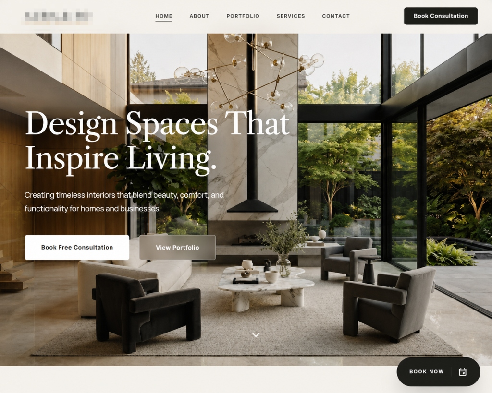
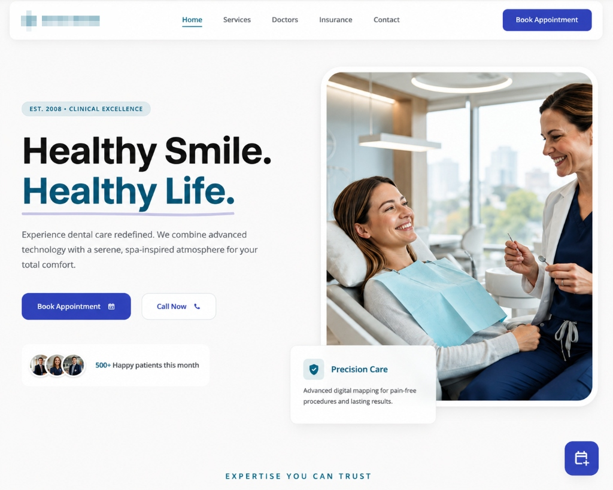

Every successful website begins with strategy, not design. I follow a structured process to create websites that are visually premium, user-focused and built to convert visitors into customers.
Every project starts with understanding the business. I study the company's services, target audience, competitors, customer behaviour and brand positioning.
Before designing anything, I invest time understanding what makes the business different.
After research, I create the website structure. I carefully plan the sitemap, navigation, content hierarchy and user journey to make every page intuitive and easy to navigate.
Once the strategy is complete, I craft a clean and premium user interface. Typography, spacing, colors, layout, visual hierarchy and interactions are designed to create an elegant user experience.
Every element is intentional.
The approved design is transformed into a fully responsive website. Attention is given to performance, responsiveness, accessibility and clean implementation.
Every section is carefully refined to ensure a smooth experience across desktop, tablet and mobile.
Every page is reviewed multiple times. Layout consistency. Responsiveness. Loading speed. Accessibility. SEO fundamentals. Cross-browser compatibility.
Every detail is checked before delivery.
After final approval, the website is deployed. Domain configuration, performance monitoring and final optimizations are completed to ensure everything runs smoothly.
A small selection of projects showcasing different industries, design approaches and business goals.

A premium website crafted for a design studio focused on modern residential and commercial interiors.

A clean, modern healthcare website built for trust, clarity and effortless patient experience.